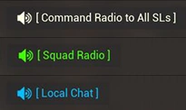

Maps

Classes and Icons

Starts and Comms
What is squad?
Squad is a strategic military shooter that focusses on realism, communication and teamwork

What type of game?
It is a first persoon, tactical, military shooter with a strong emphises on communication and teamwork. It does so in a team of 50 vs 50. It can take place in multiple locations based around realworld locations. Each team is also provided with different means of transportation and weaponry ranging from a small bike to a massive transport helicopter or even a battle tank

What type of players
The type of poeple that play this game are mostly intressted in fast range of posibility's to play this game, either you want to be playing as a tankcrew all game or as a tranport helicopter pilot that provides supplies for the rest of the team. Each match can be played in a way which ever floats your boat, which is what makes this game accesible for a large number of poeple. However it is not as fast paced as most other first persoon shooters like Call of Duty or CS:GO which might be a turn of for some poeple

Where can you get it?
Steam, squad is solely available on steam. On steam the game has a lot of workshop content as well to add on the fast amount of gameplay possibility's. For example the game has a massive starwars mod which is truely magnifisent experience to behold.
What gamemodes are available?
it has AAS, RAAS, Invasion. These gamemodes are the most populair ones and what you will most likely be playing when you join a server. In all gamemodes the objective comes down to depleting the enemy teams tickets
- AAS
- RAAS
- Invasion

In AAS (Advance and Secure) both teams know at the start of the match which locations on the map will be points to capture. When you have 1 more point then the other team, the tickets of the other team start depleting at a slow rate; the more points you have captured, the faster the tickets go down to zero and as a result ending the game.